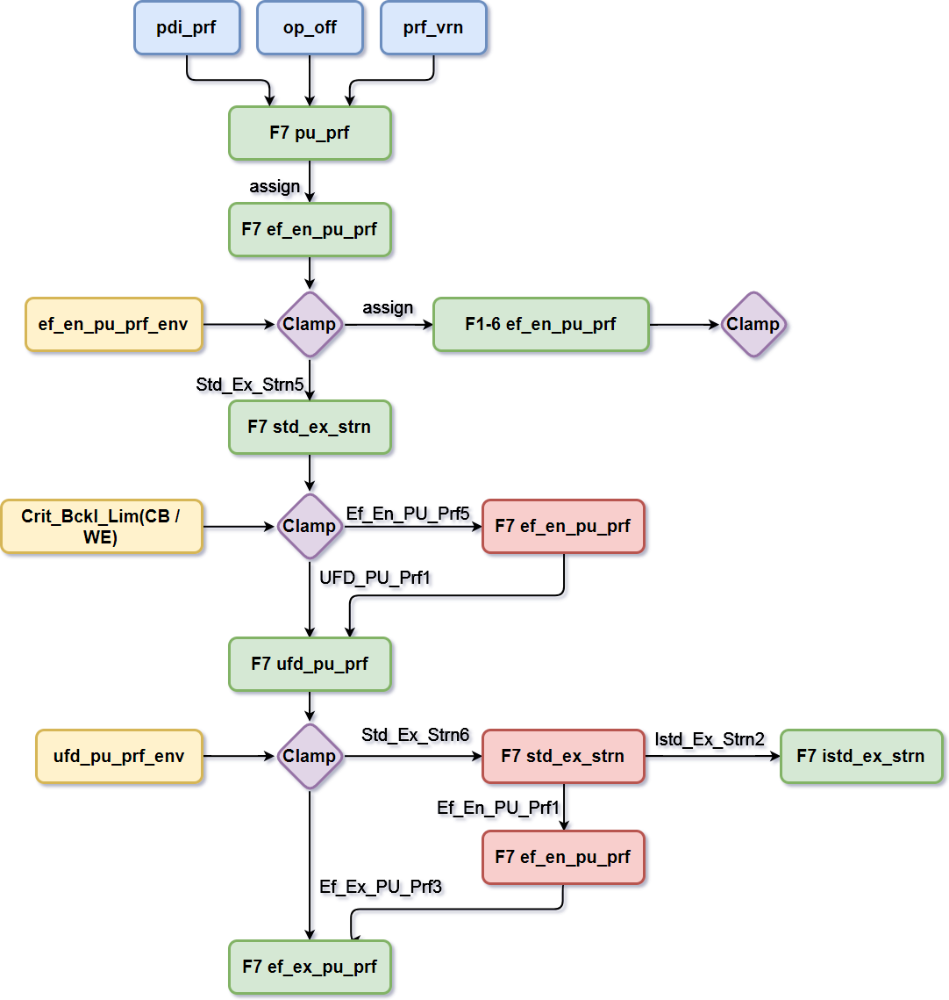

凸度分配计算¶
凸度分配计算主要在cAlcD::Calculate(..)函数中执行。
Delvry_Pass(..)之前¶
cAlcD::Calculate(..)开始时，首先赋值中间坯的“分配厚度”。中间坯的“分配厚度”实际为F1的入口厚度，即中间坯的实际厚度。接着计算F1到F7的单位轧制力、分配厚度，以及引用轧辊咬入相关的对象。
如果可以重新分配压下，那么还会计算轧制力的最大改变量。
之后计算总的单位凸度改变量pu_prf_change_sum。
1 2 3 4 | pu_prf_change_sum += pcFSPassDtmp->pcEvlLPceD[ iter ]->strn_rlf_cof / (pcFSPassDtmp->pcFSStdD[ iter ]->pcLRGD->pce_infl_cof * pcFSPassDtmp->pcEvlLPceD[ iter ]->elas_modu); |
Delvry_Pass(..)¶
Delvry_Pass(..)计算F7或最后一非空过道次的入口和出口有效单位凸度，以及出口istd应变差。
计算流程如下图所示。

基础量是加了操作工补偿和凸度自学习的单位凸度pu_prf。由pu_prf_env限幅。
首先将pu_prf直接赋值给最后一道次（F7）入口有效单位凸度ef_en_pu_prf。
之后将F7的ef_en_pu_prf直接赋值给F1到F6的入口有效单位凸度ef_en_pu_prf，并由各个道次的ef_pu_prf_env限幅。这是先假设所有机架单位凸度相同，理想状态下的情况。
回到F7，用Std_Ex_strn5计算末道次的机架出口应变差std_ex_strn，并用中浪和边浪的判别极限Crit_Bckl_Lim限幅。在判别极限中，中浪对应负值，边浪对应正值。限幅操作的意义是看std_ex_strn是否超出判别极限，若超出则一定会出现浪形，则当前std_ex_strn的值肯定不合适，需要重新计算，但是std_ex_strn的值依赖ef_en_pu_prf。因此，通过函数Ef_En_PU_Prf5，利用限幅后的std_ex_strn和目标pu_prf重计算F7的ef_en_pu_prf。
接着利用新的std_ex_strn计算F7的ufd_pu_prf_buf。同样在限幅时，若发现当前的ufd_pu_prf_buf不合适，需要重新计算。但是ufd_pu_prf的计算依赖于之前的std_ex_strn、ef_en_pu_prf计算结果，因此必须对这两个值重新计算。
最后，我们有重新计算的std_ex_strn、ef_en_pu_prf值。即可通过新的std_ex_strn值，计算出F7的出口istd应变差。利用新的ef_en_pu_prf和ufd_pu_prf_buf计算出F7的出口有效单位凸度ef_ex_pu_prf。
注意在Delvry_Pass(..)中的均载辊缝凸度只是作为中间计算结果存在，与后面分配阶段的ufd_pu_prf有所区别。
凸度分配计算的大循环¶
前期准备工作做完后进入凸度分配计算的大循环。
局部指针的引用¶
在每个循环体开始执行时，先用局部指针指向本次循环要用到的所有相关动态对象。
1 2 3 4 5 6 7 8 9 10 11 12 | // create pointers to class objects that are part of this pass pcStdD = pcFSPassD->pcFSStdD[ iter ]; pcCRLCD = pcStdD->pcCRLCD; pcAlcD = pcFSPassD->pcAlcD; pcUFDD = pcStdD->pcUFDD; pcLRGD = pcStdD->pcLRGD; pcLPceD = pcFSPassD->pcLPceD; pcPEnvD = pcFSPassD->pcPEnvD; pcEnPceD = pcStdD->pcEnPceD; pcExPceD = pcStdD->pcExPceD; // create a pointer to the previous active pass pcPrvAct = pcFSPassD->pcPrvAct; |
目的是为提高性能。
更新综合辊缝凸度¶
凸度方面，模型首先更新综合辊缝凸度，保证带钢-工作辊凸度pce_wr_crn和工作辊-支承辊凸度wr_br_crn是当前状态下的最新值。
1 2 3 4 5 6 7 8 9 10 | //--------------------------------------------------------------- // Calculate the following composite roll stack crown quantities: // Piece to work roll stack crown // Work roll to backup roll stack crown //--------------------------------------------------------------- line_num = __LINE__; pcCRLCD->Crns ( pcStdD->wr_shft, pcStdD->angl_pc, pce_wr_crn, wr_br_crn ); |
pcCRLCD->Crns(..)的计算详见CRLC模块说明。
空过的分配处理¶
分配从F7或末道次机架，从后往前倒者来。
若非末道次机架中，若本道次空过，则则传递本道次的出口厚度给上游机架，也就是空过的机架前后带钢厚度不变。并且设定本道次均载辊缝凸度ufd_pu_prf为0。
1 2 3 4 5 6 7 8 | if( pcStdD->dummied ) { //-------------------------------------------------------------- // 保存带钢的出口厚度给入口厚度. //-------------------------------------------------------------- ( ( cFSPassD* )pcFSPassD->previous_obj )->pcAlcD->thick = pcAlcD->thick; pcAlcD->ufd_pu_prf = 0.0; } |
非空过部分的计算持续到start_over之前。
咬入计算与单位轧制力约束¶
之后进行带钢的咬入计算，咬入计算的输入量有入口宽度、出入口厚度、出入口张力、轧制速度，计算输出量有单位轧制力、前滑值和接触弧长度。
1 2 3 4 5 6 7 8 9 10 11 | pcAlcD->pcRollbite->Calculate( //@S014 &rbStatus, // OUT status from calculations &force_pu_wid_buf, // OUT rolling force/width &fwd_slip, // OUT exit slip ratio [-] &arcon, // OUT length of arc [minor_length] ( ( cFSPassD* )pcFSPassD->previous_obj )->pcAlcD->thick, // IN entry_thk pcAlcD->thick, // IN exit_thk pcEnPceD->width, // IN exit/entry width pcStdD->speed, // IN roll peripheral speed pcEnPceD->tension, // IN Entry tension pcExPceD->tension ) // IN Exit tension |
为什么把咬入计算放在这里，是因为后面有重分配压下的打算，即redrft_perm为true时，需约束单位轧制力。
1 2 3 4 5 6 7 8 9 10 11 12 13 14 15 16 | if( redrft_perm ) { pcAlcD->force_pu_wid = (float) force_pu_wid_buf; //---------------------------------------------------------- // Restrict the rolling force per unit piece width to within // the rolling force per unit piece width envelope. //---------------------------------------------------------- line_num = __LINE__; cAlcD::Eval_Frc_PU_Wid( force_pu_wid_clp, pcAlcD->force_pu_wid, pcStdD->force_strip / pcStdD->pcEnPceD->width, pcPEnvD->force_pu_wid_env, pcAlcD->pcRollbite->Precision() ); } pcAlcD->flt_ok = true; |
均载辊缝单位凸度的计算¶
最重要的计算到来了，均载辊缝单位凸度的计算。
注意这里有两个均载辊缝单位凸度，一个是pcLPceD->ufd_pu_prf，另一个是pcAlcD->ufd_pu_prf，这两个ufd_pu_prf是相对的，因为要比较它们之间的偏差。
如果下游机架的带钢影响系数为0，则只计算实际的pcAlcD->ufd_pu_prf，不更新pcLPceD->ufd_pu_prf。如果下游机架的带钢影响系数不为0，则计算目标均载辊缝单位凸度pcAlcD->ufd_pu_prf，接着计算弯窜辊，最后用18项线性方程更新pcLPceD->ufd_pu_prf。
计算弯窜辊过程中可以选择执行机构的计算先后顺序，目前是先计算窜辊，再计算弯辊。执行机构的计算顺序保存在actr_prior中。cAlc::actrtyp_shift的条件则进行窜辊位置的计算，cAlc::actrtyp_bend的条件则进行弯辊力的计算。注意在优先级别actr_prior中cAlc::actrtyp_none，指的是无执行机构执行计算，表示预设位。
在窜辊计算中，首先根据目标均载辊缝单位凸度pcAlcD->ufd_pu_prf利用18项线性方程反算综合辊缝凸度：带钢-工作辊凸度pce_wr_crn和工作辊-支承辊凸度wr_br_crn。之后pce_wr_crn代入pcCRLCD->Shft_Pos(..)计算窜辊位置，最后利用pcCRLCD-> Crns(..)和新计算的窜弯辊值更新综合辊缝凸度。
在窜辊计算中，用pcUFDD->Bnd_Frc(..)反算弯辊力，注意输出量force_bnd为force_bnd_des限幅后的结果。
设定一个表示目标均载辊缝单位凸度和实际均载辊缝单位凸度偏差的指示器。若偏差大于ufd_pu_prf_tol（目前为0.0001）则设定为true，表示均载辊缝单位凸度偏差超出了容许的范围，引出了后面有关alc_lim缩小偏差的一系列计算。
1 | alc_lim = fabs( pcAlcD->ufd_pu_prf - pcLPceD->ufd_pu_prf ) > pcAlcD->pcAlc->ufd_pu_prf_tol; |
大循环中redrft_perm相关计算¶
重算单位轧制力以及更新相关动态参数。由于redrft_perm为false，这里的计算内容忽略。
alc_lim相关计算¶
首先计算个局部变量的ufd_pu_prf，用pcUFDD->Prf(..)计算，注意若轧制力不允许重新分配，那么这个局部的ufd_pu_prf和pcLPceD->ufd_pu_prf（目标）是一样的。也就是说，若轧制力重新分配，需要使用新的弯辊力和综合凸度去更新ufd_pu_prf。
接着利用pcLRGD->Ef_En_PU_Prf3(..)计算新的入口有效单位凸度ef_en_pu_prf_buf。此时旧的入口有效单位凸度为ef_en_pu_prf（old）。
上一道次的有效单位凸度包络线当然可以约束ef_en_pu_prf_buf。但是这种约束并不准确，因为厚度可能会变，因此约束标准应当有所放宽。所以在程序中用出口有效单位凸度ef_ex_pu_prf来约束。约束后新的入口有效单位凸度设为ef_en_pu_prf。
用新的ef_en_pu_prf求出std_ex_strn和ef_ex_pu_prf。至此，在这个阶段我们获得了可能合适的出入口有效单位凸度。但是别急，还需要判断出口的浪形，才能决定我们目前的分配凸度是否合适。
分配模型中，如果进入了alc_lim的计算，在重计算出入口有效单位凸度后必须进行浪形判别。F1和F6本道次的浪形判别，由本道次的应变差和下一道次应变差是否超死区极限决定。F7道次的浪形判别，仅由本道次F7的应变差是否超限决定。
当浪形判别不通过，或者说flt_ok为假时，可以稍微放宽一点标准。如果非末道次机架的下道次应变差不超死区极限，那么也算本道次浪形判别通过。
1 2 3 4 5 6 | if ( pcFSPassD != pcLstActFSPassD ) { pcAlcD->flt_ok = ( std_ex_strn_dn <= bckl_lim_dn[ we ] ) && ( std_ex_strn_dn >= bckl_lim_dn[ cb ] ); } |
到现在这一步，如果浪形判别还不能通过，那么需要重新设定目标单位凸度。先重新设定目标有效单位凸度，用pcTargtD->Pass_Mill_Targ(..)计算获得，变量为ef_pu_prf_alt。再利用F7的istd_ex_strn反推std_ex_strn，结合ef_pu_prf_alt计算出目标单位凸度pu_prf。注意在alc模块中，大循环的这个位置是alc局部pu_prf变量第一次介入的地方，局部pu_prf变量预设为0。之后对pu_prf进行限幅，这样新的目标单位凸度就诞生了。
接着是一个难点问题。
1 | pcCritFSPassD = pcFSPassD; |
将更新了目标单位凸度的道次地址赋值给pcCritFSPassD指针。这个pcCritFSPassD最开始是指向F7道次的。pcCritFSPassD指针设定的意义在于：在迭代计算的过程中，浪形判别不合格的相应道次必须比之前更新过目标单位凸度的道次低。
在alc_lim计算过程的最后，若目标单位凸度发生改变，则设定start_over指示器为true，以进行后续start_over的流程。
非空过道次的更新¶
在alc_lim计算之后，更新给定条件下的ufd_pu_prf、ef_pu_prf、strn、prf，注意这些值都属于lpce对象。
start_over流程¶
如果目标单位凸度发生改变，则更新目标单位凸度的迭代次数（累积加一）。之后从F7重新开始大循环的计算，从Delivry_Pass(..)起步重算出入口有效单位凸度，并设定F7的有效单位凸度为出口有效凸度。
如果目标单位凸度没有发生改变，说明本道次的浪形是符合判别条件的，不需要更改目标；或者目标均载辊缝凸度达到了实际的均载辊缝凸度。进一步说，有两种情况会进入start_over为假的流程，一种是未进入alc_lim计算的状态，另一种是进入了alc_lim的计算，但是浪形判别合格的状态。则当前道次对象pcFSPassD可以前移一个道次。出入口有效单位凸度现在敲定是合适的。
之后是：对不均匀变形道次ef_en_pu_prf修正的过程。在此阶段，如下一段代码需要注意，在理解上可能会出错。
1 2 3 4 5 6 7 8 9 10 11 12 13 14 15 16 17 18 19 | //--------------------------------------------------- // Increment pointer to previous dynamic PASS object. //--------------------------------------------------- pcFSPassD = ( cFSPassD* )pcFSPassD->previous_obj; //------------------------------------------------------------- // Save the effective entry per unit profile of the previous // pass into the effective exit per unit profile for this pass. //------------------------------------------------------------- ef_ex_pu_prf = ef_en_pu_prf; //---------------------------------------------------------- // Determine the upstream effective per unit profile to aim // towards using the extreme downstream pass where the piece // influence coefficient is zero. //---------------------------------------------------------- ef_en_pu_prf = cMathUty::Clamp ( ef_ex_pu_prf, pcPceIZFSPassD->pcPEnvD->ef_pu_prf_env[ minl ], pcPceIZFSPassD->pcPEnvD->ef_pu_prf_env[ maxl ] ); |
这段代码执行之后，ef_ex_pu_prf这个变量的意义已经发生改变，不再代表本道次的出口有效单位凸度。因为前面我们的pcFSPassD道次对象已经前移一个道次，因此程序的设计者为了简练，直接使用局部变量ef_en_pu_prf代表其它含义。
如代码所示，ef_ex_pu_prf保存的是原ef_en_pu_prf的值，而新的ef_en_pu_prf是受到pcPceIZFSPassD道次ef_pu_prf_env包络线限幅之后的值。
没经过浪形判别或经过浪形判别但没有改变目标单位凸度的过程参数ef_en_pu_prf，必须从出现不均匀变形的机架开始，用每个机架的单位凸度最大改变量约束和修正本道次的ef_en_pu_prf。ef_en_pu_prf修正过程是个循环，从pcPceIZFSPassD道次的下一道次开始，且当前道次的上一道次在不均匀延伸的机架中，直至末道次。
ef_pu_prf_chg[cb/we]并不能直接作为真正的有效单位凸度最大改变量，或真正的有效凸度改变约束条件。在不均匀变形的机架中，它需要本道次的ef_pu_prf_env和上一道次的ef_pu_prf_env介入，来获得一个更窄的变化区间ef_pu_prf_dlt[minl/maxl]，用所有存在不均匀变形机架的这个区间来修正本道次的ef_en_pu_prf。
1 2 3 4 5 6 7 8 9 10 11 12 13 14 15 16 17 18 | //------------------------------------------------------ // Calculate the delta effective per unit profile change // from stand entry to interstand exit. //------------------------------------------------------ ef_pu_prf_dlt[ minl ] = cMathUty::Max( pcBufFSPassD->pcFSStdD[ iter]->pcLRGD->ef_pu_prf_chg[ cb ], cMathUty::Max( ef_ex_pu_prf, pcBufFSPassD->pcPEnvD->ef_pu_prf_env[ minl ] ) - cMathUty::Min( ef_en_pu_prf, ((cFSPassD*)pcBufFSPassD->previous_obj)->pcPEnvD->ef_pu_prf_env[maxl])); ef_pu_prf_dlt[ maxl ] = cMathUty::Min( pcBufFSPassD->pcFSStdD[ iter]->pcLRGD->ef_pu_prf_chg[ we ], cMathUty::Min( ef_ex_pu_prf, pcBufFSPassD->pcPEnvD->ef_pu_prf_env[ maxl ] ) - cMathUty::Max( ef_en_pu_prf, ((cFSPassD*)pcBufFSPassD->previous_obj)->pcPEnvD->ef_pu_prf_env[minl])); |
ef_pu_prf_dlt的计算，讲白了就是用本道次机架的有效凸度减前一道次机架的有效凸度，只不过将本道次机架和前道次机架的包络线和ef_ex_pu_prf、ef_en_pu_prf联系起来，用于收窄死区。ef_pu_prf_chg依据于理论计算，第二项的差值依据于本道次和上道次的包络线，若中浪则取最大的，若边浪则取最小的。
先求有效凸度改变的总量。从出现不均匀变形的机架（pcPceIZFSPassD道次的下一道次）开始，如果pcPceIZFSPassD道次包络线限幅后的ef_en_pu_prf小于原值，说明pcPceIZFSPassD道次的包络线区间整体小于原ef_en_pu_prf，那么ef_pu_prf_sum累加ef_pu_prf_dlt[maxl]。反之，若pcPceIZFSPassD道次包络线限幅后的ef_en_pu_prf大于原值，说明pcPceIZFSPassD道次的包络线区间整体小于原ef_en_pu_prf，那么ef_pu_prf_sum累加ef_pu_prf_dlt[minl]。
注意pcFSPassD是本道次的前一道次，而在修正ef_en_pu_prf的循环当中，pcBufFSPassD指向本道次的前一道次时，循环结束。
这时ef_en_pu_prf变量的含义又发生了改变，变回了字面意思，即本道次的入口有效单位凸度。修正是从原始初设定的入口有效单位凸度加上（或减去）与累加有效凸度改变总量成比例的一部分ef_pu_prf_dlt，作为新的入口有效单位凸度存在。
1 2 3 4 5 | // 以边浪情形为例 ef_en_pu_prf = ef_ex_pu_prf - ef_pu_prf_dlt[ maxl ] * ( ef_ex_pu_prf - ef_en_pu_prf ) / ef_pu_prf_sum; |
修正结束后，考虑ef_en_pu_prf和ef_ex_pu_prf偏差太大的情况，则计算ef_en_pu_prf_dft作为最终的ef_en_pu_prf。
1 2 | float ef_en_pu_prf_dft = ef_ex_pu_prf + (pcTargtD->en_pu_prf - pcTargtD->pu_prf) * pcFSPassD->pcAlcD->pu_prf_change; |
最后用pcTargtD->Eval_Ef_En_PU_Prf(..）评估一下ef_en_pu_prf和ef_ex_pu_prf。
后续其它计算¶
若轧制力不重新分配，则预设所有机架force_ssu为0。